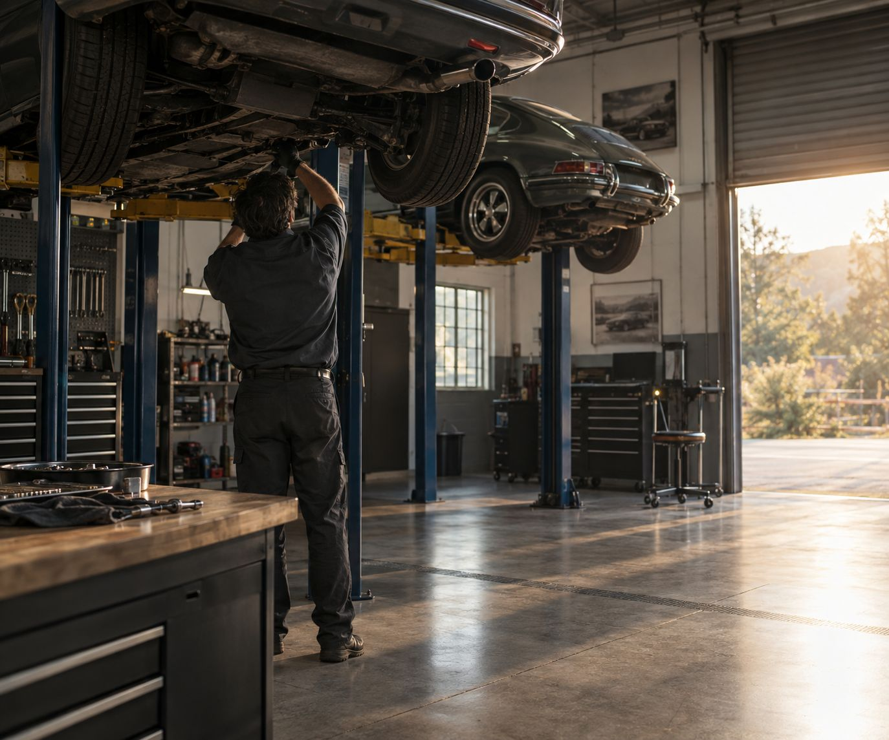

● For independent repair shops
You run the bays. We'll handle the back lot.
What owners miss
Three things worth a second look.
The converter in the mixed bin
The single most valuable item in most shops, and the one most often sold by weight with everything else.
Cores with no credit
Starters, alternators and compressors you can't return still have recycling value.
Floor space
A cleared corner is a working corner. Scheduled pickup gives it back.


"We understand how shops actually operate."
Owner to owner. Same guy on the phone every time.